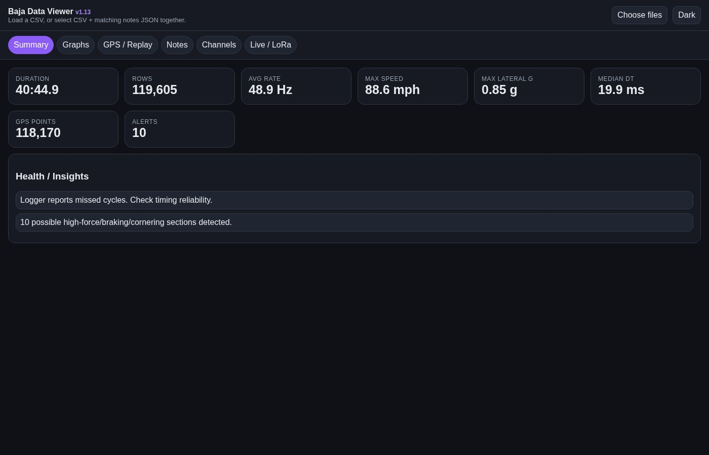
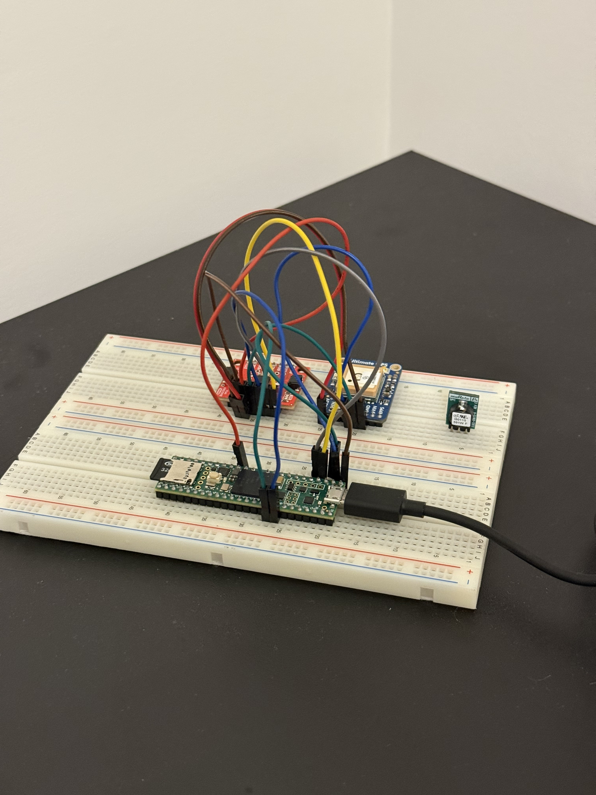
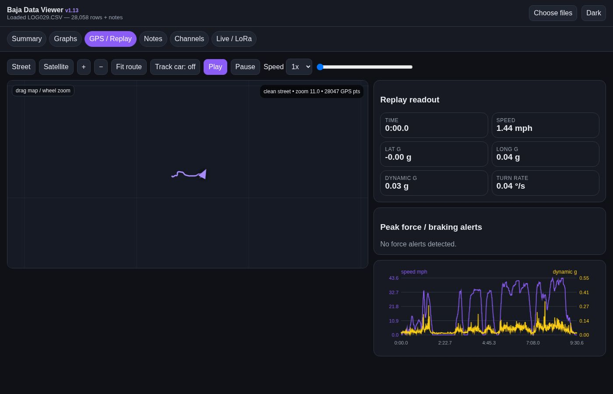

The Stevens Baja car has always been designed off of feel and observations. This project aims to change that. It is a data acquisition system built around a Teensy 4.1 micro controller that will be able to record almost any sensor we need it to. Paired with a custom browser-based dashboard for post-session analysis, it should lead to data driven design for future Baja SAE cars.

The prototype runs on a breadboard. A Teensy 4.1 reads a GPS module and 6-axis IMU via I2C and serial, logs everything to an onboard SD card, and is powered through a small buck converter that steps the car's 12V battery down to 5V so nothing fries. That's the whole system today given its sensors that don't require the Baja SAE car for testing and I can build out the analysis dashboard at home.

The Teensy writes CSV files to the SD card. Then, those CSVs drop into a single-file HTML dashboard that runs entirely in the browser. This was chosen to allow any team member to easily look at the data and open the site from just the SD card (the analysis tool can be kept with the car). The dashboard has six views: a summary with key statistics, a multi-channel graph viewer, a GPS replay with a map, a notes panel for logging driver feedback(These are also stored on the SD card), a raw channel table, and a live serial stream for future LoRa use.

| GPS | Active: logging position, speed, heading at 10 Hz |
| IMU | Active: logging 3-axis acceleration + gyro at up to 1 kHz |
| Battery voltage | In Progress: Adafruit INA219 board waiting installation on test bench. |
| Hall effect wheel speed | Planned: Waiting to have access to the car and shop to manufacture mounting system. May end up getting pushed to 2026-27 car. |
| Brake pressure | Planned: Waiting to after competition for installation and testing |
| Suspension travel | Future: Would love to have this sensor but need to get budget approval |
| Temperature | Planned: Waiting to after competition for installation and testing. Would be installed to measure CVT belt temperature. |